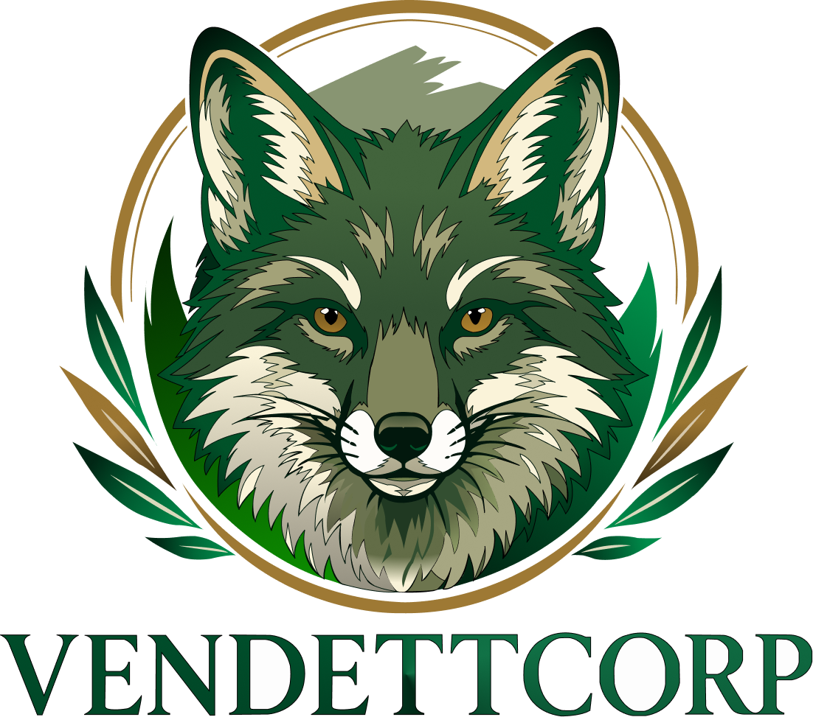

En mi tiempo libre me gusta descansar o ver serios o peliculas. Normalmente siempre he preferido quedarme en casa y no salir a fiestas o reuniciones, ya que no suelo ser muy extrovertido con las personas con las que no tengo confianza. Pero una vez que tengo esa confianza ya es otra cosa, ya que me gusta hacer reir a las personas y pasar un buen momento para pasarla bien y olvidarnos de los problemas que podamos tener en el día a día.
Ese metalidad la he aprendido de mi tio Marco, ya que el es una persona relajada y que no le importa lo que las demas personas puedan decir de uno mismo, ya que en esta vida no podemos agradarle a todas las personas, ya que no todas las personas les puede gustar mi tipo de humor ya que en veces suelo usar mucho el humor negro o de otro tipo, pero pos los chistes para eso son para reirse de lo que pasa día a día.
Dejando eso de lado, las cosa que me gustan son:
- La fotografía
- Los videojuegos
- Cocinar para las personas que me agradan.
- Descansar.
- Escuchar música.
- Manejar.
Estos intereces forman de mi día a día, cocinar casi ya no lo hago pero si se arma algo yo jalo. también me han gustado algunos de los proyectos que he llevado en la uni. Uno de ellos fue crear un logo en Figma que nos dejo el Profe Luis Maria.

Tarde como una semana en hacero, pero la verdad valio totalmente la pena. Lo que mas me gusto fue modificar cada capa, color y degradado para que el logo se viera muy profesional.